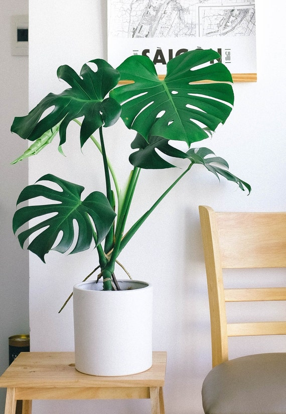

Monstera Deliciosa

(Monstera deliciosa) is a tropical plant native to rainforests of Central America from southern Mexico to
Panama, and commonly grown as a foliage houseplant.
As a houseplant, monstera deliciosa does best in bright light in summer and direct sun in winter. It can
be grown under florescent light, but will not develop the leaf perforations when light is inadequate.
It prefers warm room temperature and medium to high humidity, but is fairly tolerant of a wide range of
conditions once
acclimated. Plants do not grow below 50ºF, however, and frost will kill them.